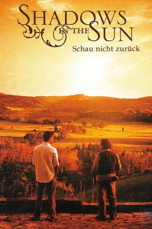
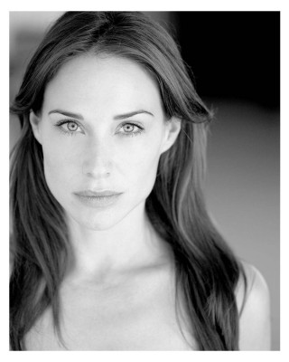
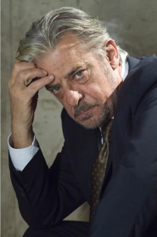
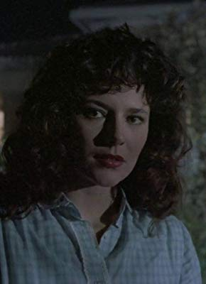

#11007 Liebe lieber italienisch
Alternativ: Shadows in the Sun (Englischer Titel)
 
 IMDB-Wertung: 6.8 / 10
IMDB-Wertung: 6.8 / 10  Metascore: 0
Metascore: 0 
Jeremy Taylor, ein junger Verleger aus London, wird von seinem Chef beauftragt, den ehemaligen Bestsellerautor Weldon Parish in der Toskana zu aufzusuchen und mit ihm einen Vertrag über ein neues Buch zu schließen. Der Autor hat sich nach dem Tod seiner Frau vor 20 Jahren in die Toskana zurückgezogen und bisher alle Angebote für ein neues Buch abgelehnt. Als Jeremy in der Toskana ankommt, ist es genau so, wie er befürchtet hatte. Parish ist äußerst unfreundlich und scheint verrückt zu sein. Doch Jeremy bleibt standhaft und schon bald scheint Parish sein anderes, wahres Gesicht zu zeigen. Parish, der weiterhin keine Verhandlungen wegen eines neuen Buches aufnehmen will, ist dennoch schwer beeindruckt von dem jungen Mann. Als Jeremy dann auch noch Parishs junge Tochter Isabella kennenlernt, ist es um ihn geschehen. Er verliebt sich in sie und schon bald muss er eine Entscheidung treffen, die sein Leben komplett verändern könnte...
Jahr: 2005
Dauer: 92 Minuten
FSK: 12
Land: England Studio: MORE Music and MediaTonspuren:
Untertitel:
Auflösung: 1080p (1920x880) Größe: 5591 MB
Genre: Drama, Komödie, Liebe
Regisseur: Brad Mirman
Drehbuch: Brad Mirman
Soundtrack: Mark Thomas
Darsteller:
 Harvey Keitel als Weldon
Harvey Keitel als Weldon Joshua Jackson als Jeremy
Joshua Jackson als Jeremy-  Claire Forlani als Isabella
-  Giancarlo Giannini als Father Moretti
 John Rhys-Davies als Mr. Andrew Benton
John Rhys-Davies als Mr. Andrew Benton- Armando Pucci als Gustavo
-  Valéria Cavalli als Amalia
- Bianca Guaccero als Maura
- Ken Drury als McBain
- Stomy Bugsy als Emanuele
- Jake Broder als Christian Lord
- Silvia De Santis als Dinnie
- Anna Lelio als Elderly Woman
- Bernardino Mili als Postman
- Leiva Nanzi als Woman Singer
- Albert Dray als Alberto Carina
- Pierluigi Iorio als Antonio
- Luisella Mattei als Signora Piccoli
- Giovanni Rizzuti als Pietro
- Lily Tirinnanzi als Nurse
- Maurizio Romoli als
- Camilla Ferranti als Tango Dancer (uncredited)
- Eleonora Neri als (uncredited)
- Cinzia Ricciardi als (uncredited)
Datei: X:\2005(G-M)\Liebe lieber italienisch (2005, FSK12, 1920x880).mkv seit 16.04.2019
Festplatte: HD 2005(G-Z)-2006(A-Z)
 Es gibt insgesamt 46 Filme in der Gruppe '2005(G-M)'
Es gibt insgesamt 46 Filme in der Gruppe '2005(G-M)'